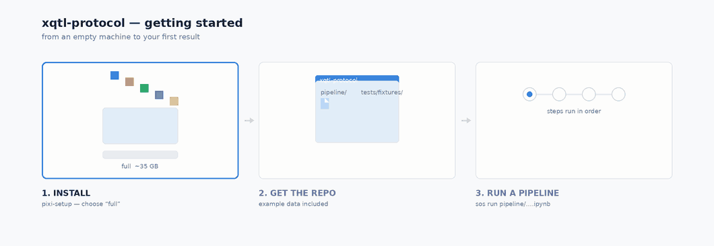

Environment Setup#

Three steps take you from an empty machine to your first pipeline run:
Step |
What it does |
|---|---|
1. Install the environment |
|
2. Get the repo |
the example data comes with it — no separate download |
3. Run a pipeline |
|
Not sure which pipelines you need? Use the pipeline selector. Answer a few questions about your data — molecular phenotype, whether you are fine-mapping from individual-level data or summary statistics, whether you are integrating with GWAS — and it lists the pipelines that apply, with their inputs, outputs and the commands to run them. This page covers how to run a pipeline; the selector tells you which.
Before You Start#
The protocol’s pipelines are written as SoS (Script of Scripts) workflows. You do not need to install SoS separately — it comes with the environment in Step 1, along with a registered sos Jupyter kernel if you would rather work interactively.
Native support is provided for Linux and macOS (Intel and Apple Silicon). Windows users need WSL.
Step 1. Install the xQTL Software Stack with pixi#
Install the bioinformatics and data-science packages the protocol depends on using pixi via the StatFunGen/pixi-setup installer. Full reference: Advanced Software Setup with Pixi.
On HPC systems, your home directory likely has a storage quota that will not fit the full install. Point HOME at a path with enough space, and add pixi to your $PATH:
# Point HOME to a location with enough disk space
export HOME="/your_pixi_install_path"
# Add pixi to your path
export PATH="/your_pixi_install_path/.pixi/bin:$PATH"
Then download the installer and run it:
curl -fsSL https://raw.githubusercontent.com/StatFunGen/pixi-setup/refs/heads/main/pixi-setup.sh -o pixi-setup.sh
bash pixi-setup.sh
On a laptop or workstation you can skip the HOME/PATH exports and just run the two commands above — the installer will prompt you to choose an install path.
The installer will prompt you for two things:
1. Installation path — where pixi stores environments and packages.
Setting |
When to use |
|---|---|
|
Laptops and workstations with plenty of home-directory space |
|
HPC systems with strict home-directory quotas |
2. Installation type
Type |
Size |
Files |
Includes |
|---|---|---|---|
1. minimal |
~5 GB |
~100k |
CLI tools, Python data-science stack, JupyterLab, base R (tidyverse, devtools, IRkernel) |
2. full |
~35 GB |
~350k |
Everything above, plus the bioinformatics suite — plink, samtools, bcftools, bedtools, STAR, GATK4, tensorqtl, Seurat, Bioconductor packages |
Choose full for this protocol; minimal does not include the bioinformatics tools the pipelines call.
Then restart your shell, or:
source ~/.bashrc
Verify:
which sos Rscript # both should resolve inside your pixi install
sos --version
jupyter kernelspec list # should include 'sos'
Step 2. Clone the Protocol#
git clone https://github.com/StatFunGen/xqtl-protocol.git
cd xqtl-protocol
Run everything from the root of the repository. All pipelines are symbolic links in the pipeline folder, so you execute them directly as sos run pipeline/<pipeline_file>.ipynb.
Step 3. The Example Data#
You do not need to download anything. Example data is included in this repository under tests/fixtures/ — about 89 MB covering 33 pipelines:
ls tests/fixtures/
apa_calling gwas_qc intact mash pca rna_calling twas vcf_qc
qtl_mini sldsc_enrichment splicing_calling susie_enloc ...
Each directory holds the inputs for one pipeline, sized down to chromosome 22 so a pipeline runs in minutes. Some directories also carry reference data — genome annotation, LD panels — under their upstream filenames so you can see where they came from.
To run a pipeline on your own data, pass your own file paths to the same parameters in place of the tests/fixtures/… ones.
Step 4. Run Your First Pipeline#
Add -n to preview first: SoS parses the notebook, binds your parameters, prints the command it would run, and touches no data. It takes seconds, so it is a good habit before a long job.
sos run pipeline/gene_annotation.ipynb annotate_coord \\
--phenoFile tests/fixtures/gene_annotation/protocol_example.rnaseq.bed.gz \\
--coordinate-annotation tests/fixtures/gene_annotation/Homo_sapiens.GRCh38.103.collapse_only.gene.chr22.gtf.gz \\
--phenotype-id-column gene_id \\
--modular-script-dir code/script --cwd /tmp/gene_annotation_demo -n
Then drop the -n to run it:
INFO: annotate_coord output: /tmp/gene_annotation_demo/protocol_example.rnaseq.bed.bed.gz
/tmp/gene_annotation_demo/protocol_example.rnaseq.bed.region_list.txt
Two shapes of pipeline#
Inputs passed directly — as above, point straight at files in tests/fixtures/.
Inputs staged into a working directory — some pipelines look for *.gz inside their --cwd rather than taking file arguments, so copy the example data in first:
W=/tmp/qtlpp; mkdir -p $W/tensorqtl_cis $W/out
cp tests/fixtures/qtl_association_postprocessing/*.gz $W/tensorqtl_cis/
sos run pipeline/qtl_association_postprocessing.ipynb default \\
--cwd $W/tensorqtl_cis --modular-script-dir code/script --output-dir $W/out \\
--maf-cutoff 0.01 --cis-window 1000000 --pvalue-cutoff 0.05 \\
--study protocol_example --context bulk_rnaseq --genome hg38
Finding the parameters for any pipeline#
Each pipeline’s tests carry parameter sets that are known to work, which is the quickest way to get a runnable command for one you have not used before:
# which test drives the notebook you want
grep -rl 'run_sos' tests/notebooks --include='*.py'
# the notebook, step and parameters
grep -n -A16 'run_sos(' tests/notebooks/<path>/test_<name>.py
Translating what you find into command-line flags: output_prefix="toy" becomes --output-prefix toy, fx / "twas/protocol_example.x.tsv" becomes tests/fixtures/twas/protocol_example.x.tsv, and repo_root / "code/script" becomes --modular-script-dir code/script.
Next, use the Interactive xQTL Pipeline Guide to choose the modules that match your molecular phenotype and scientific goal.
Software Environment#
Every protocol on this site runs inside the pixi environment configured in Steps 1-2. Once pixi and SoS are installed, each example “just works” — no per-pipeline container, no manual dependency wrangling.
Need something extra? Install it into the right pixi environment:
# Python package (into the shared python env)
pixi global install -c conda-forge --environment python <package>
# R package (into the r-base env)
pixi global install -c conda-forge --environment r-base r-<package>
# Standalone bioinformatics CLI tool
pixi global install -c bioconda <tool>
Troubleshooting#
Warning
R library conflicts. If you see an error like
Error in dyn.load(file, DLLpath = DLLPath, ...):
unable to load shared object '$PATH/R/x86_64-pc-linux-gnu-library/4.2/stringi/libs/stringi.so':
libicui18n.so.63: cannot open shared object file: No such file or directory
your system R libraries are being picked up alongside the pixi ones. Unset them before running the pipeline:
export R_LIBS=""
export R_LIBS_USER=""
pixi: command not found — open a new terminal, or re-source your shell rc file (source ~/.bashrc on Linux/HPC, source ~/.zshrc on macOS).
Installer killed on HPC — you’re on a login node. Request a compute node with ≥ 50 GB memory and re-run.
sos: command not found — Step 1 didn’t complete. Re-run the conda install command for SoS.
ModuleNotFoundError during a pipeline — install the missing package into pixi’s python env with the command above.
Still stuck? Open an issue with the command you ran and the full error output.
Analyses on High Performance Computing Clusters#
The demo on this page runs on a desktop workstation. Production analyses typically run on an HPC cluster, and SoS supports this natively via SoS Remote Tasks on configured host computers.
We provide a toy example for running SoS pipelines on a typical HPC cluster environment — first-time users are encouraged to work through it before launching real jobs. It covers the host and task configuration you’ll reuse for every subsequent pipeline, and it’s schedule-agnostic (SLURM, LSF, SGE, PBS/Torque all work).